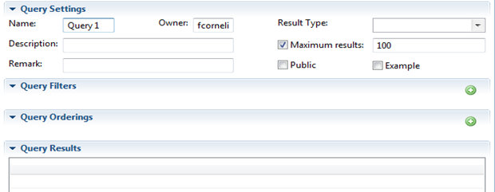
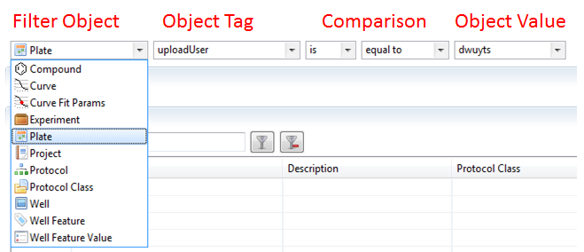
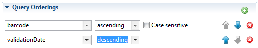

A query has several settings you can modify in order to keep track of your queries.
- Name: You can input any text here as a name, that will be shown in the Navigator. For Examples/Public queries, use a meaningful short name.
- Description: A longer text that will be used as a tooltip.
- Remark: Extra tips which may be useful in longer queries.
- Owner: The name of the query Owner, your name if you are building one. [this is automatically filled]
- Result Type: This determines the filters and filter combinations you can specify.
- Max Results: When building a query, we advise to use a small number of results to get quicker results. Switch off before you save.
- Public: After saving, a query will be available for everyone. If not checked, a Query will be private.
- Example: Query will end up in a special “Example Queries”section in the navigator. Public, for training.
- Query Filters: Specify any number of criteria to return only the data you want.
- Query Orderings: Specify any number of (hierarchical) sorting criteria to return data in the order you want.
- Query Results: Table with results, returned by the database. Different Result Types have different columns. You can reorder by clicking on a column header.
You don't need to know a programming language to build these queries. You can simply use the filters to add criteria.
You can add filters by using:
When you start entering values in the fields, extra fields may appear if needed. The different fields represent different parts of a selection, as shown in the figure below:

On the image above, the query would read as "Give me all the plates that were uploaded by dwuyts".
- Filter Object: First criteria element is the result type
- Object Tag: One of the meta data items of that object.
- Comparison: Logical operators and mathematical comparators to build constraints.
- Logical: IS or IS NOT (True or False)
- Mathematical: [text] in, like, equal to, starting with, ... [numbers] empty, NaN (not a number), ...
- Object Value: Text or numerical part. The way to fill this parameter depends on the selected comparison. If applicable, a "Case Sensitive" button will appear after the input, as shown below:
Functions of the buttons:
| Add more filters | |
 |
Remove a filter |
Every filter that you add will be seen as an extra constraint. So it is not possible to filter results that follow only one of the set filters.
If you want to show your result in a certain order (sorted), you can use the orderings to order on a result parameter.
Functions of the buttons:
| Add an order | |
|
Remove an ordering |
| Change the sequence. |
The sequence in which you make these orderings, will influence the end result. The first ordering will be used first. If there are more results with the first ordering, the second ordering will be applied etc.